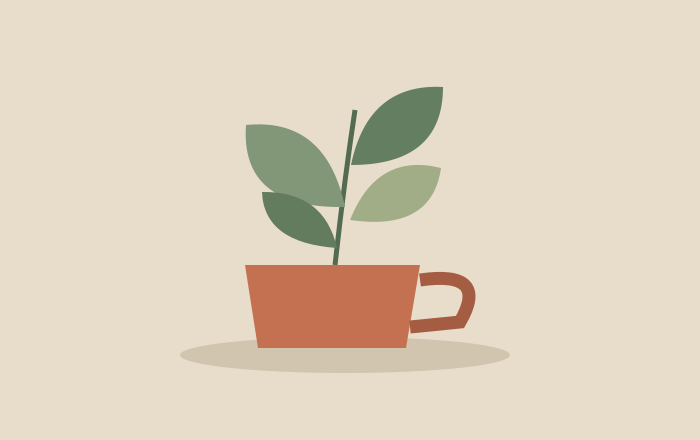

你好，世界。这里是 Ruruka。
给想法一个落脚的地方。从第一篇文字开始，慢慢积累属于自己的数字花园。
1 分钟阅读阅读全文 ↗给想法一个落脚的地方。从第一篇文字开始，慢慢积累属于自己的数字花园。
读这篇文章 ↗给想法一个落脚的地方。从第一篇文字开始，慢慢积累属于自己的数字花园。
1 分钟阅读阅读全文 ↗
没有复杂的后台，也能拥有自己的写作空间。记下这个静态博客的构成与更新方式。
2 分钟阅读阅读全文 ↗
一页书、一束光、一段没有目的的散步。那些微小的片刻，也值得被认真记录。
1 分钟阅读阅读全文 ↗